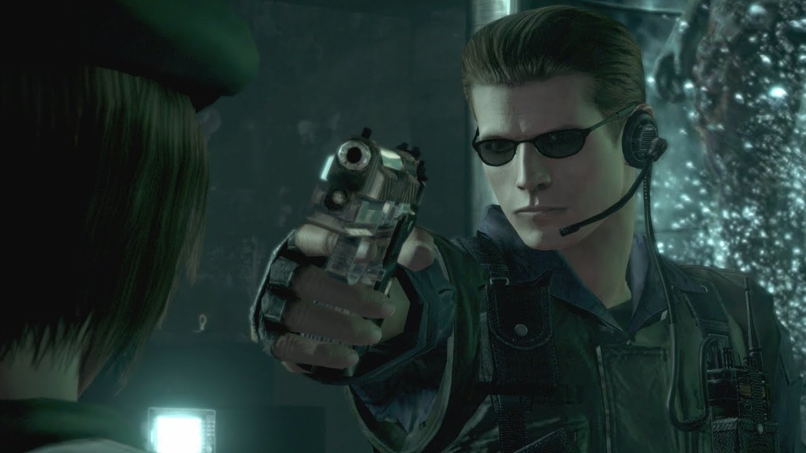
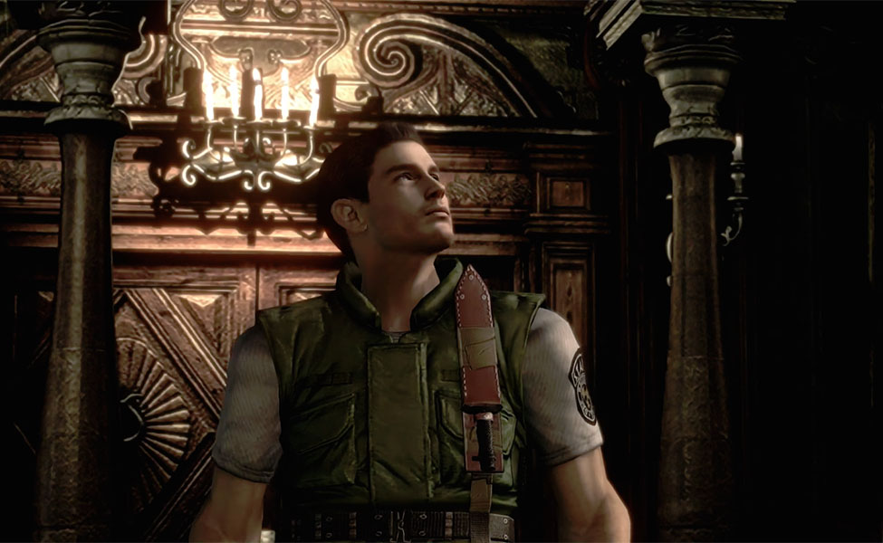
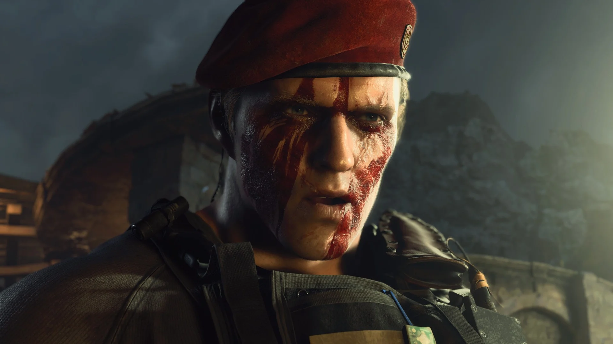
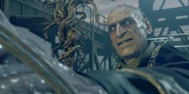

Catálogo de Personajes (Sujetos)
Agentes operativos, civiles clave y ex-afiliados a nuestra corporación en estado paradero o defunción.
Leon S. Kennedy
Comenzó como un policía novato en Raccoon City y escaló a Agente Especial de los EE.UU. Superviviente vital de múltiples brotes.
Jill Valentine
Especialista del equipo Alpha de S.T.A.R.S. Perseguida agresivamente por Nemesis T-Type. Fundadora clave de la BSAA.

Albert Wesker
Antiguo capitán y mente maestra corporativa. Mediante ingeniería viral adquirió fuerza y agilidad letalmente insustituibles.

Chris Redfield
Antiguo miembro del equipo Alpha de S.T.A.R.S. Sobreviviente del Incidente de la Mansión. Pilar fundamental y capitán en la B.S.A.A.
Claire Redfield
Buscaba a su hermano durante el incidente de Raccoon City y se convirtió en una sobreviviente clave. Actualmente es miembro activo de la ONG TerraSave.
Ada Wong
Agente doble de inteligencia con lealtades ambiguas. Especialista en infiltración y recuperación de datos clasificados de Umbrella.

Jack Krauser
Oficial especial corrupto que se alió con Los Illuminados. Posee implante parasitario de alto nivel y habilidades de combate aumentadas.

Osmund Saddler
Líder del culto de Los Illuminados y portador de la Plaga de Control. Amenaza crítica clasificada en los registros de incidentes.